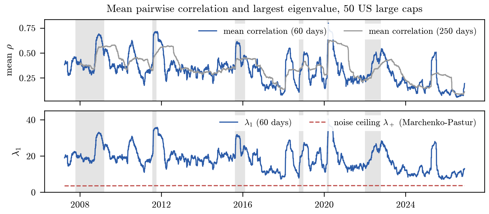
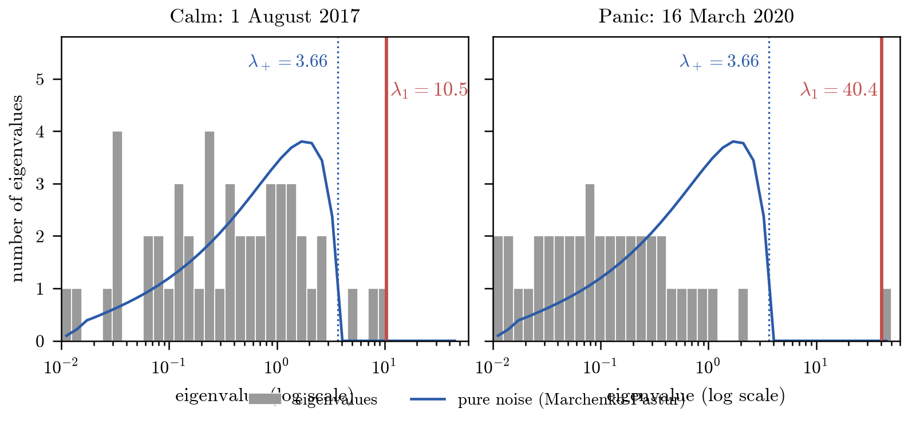
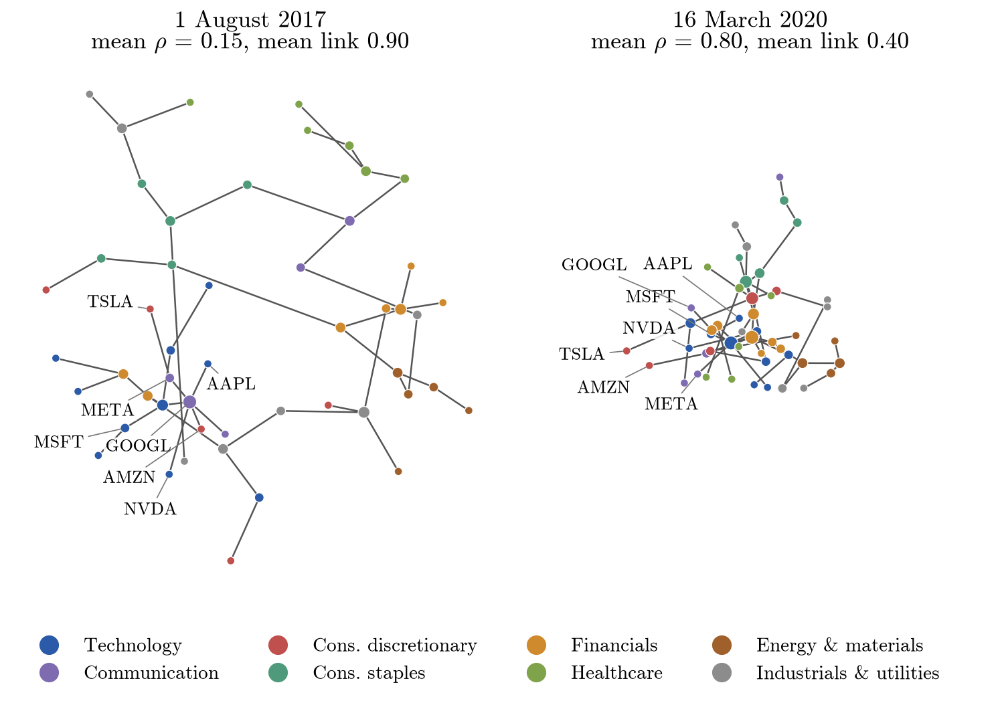
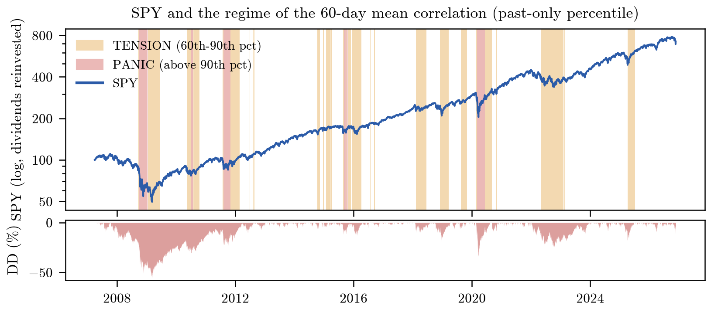
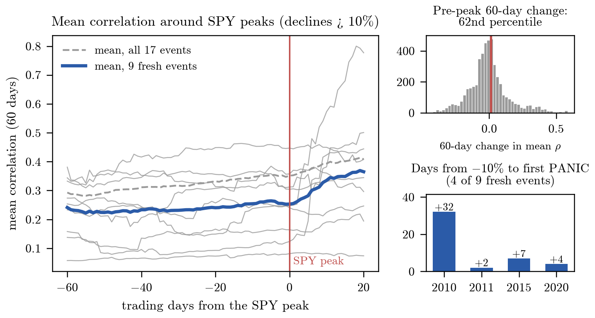
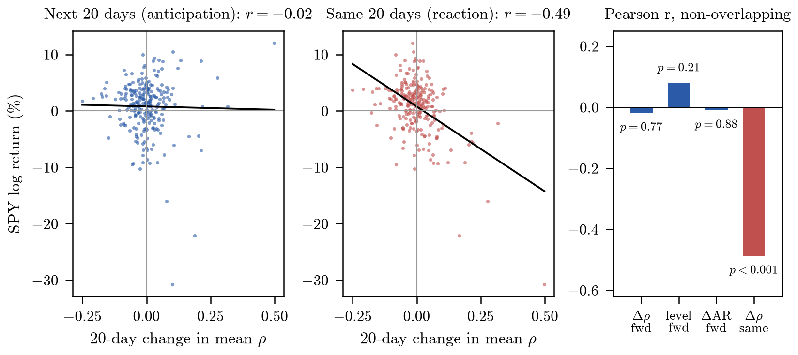
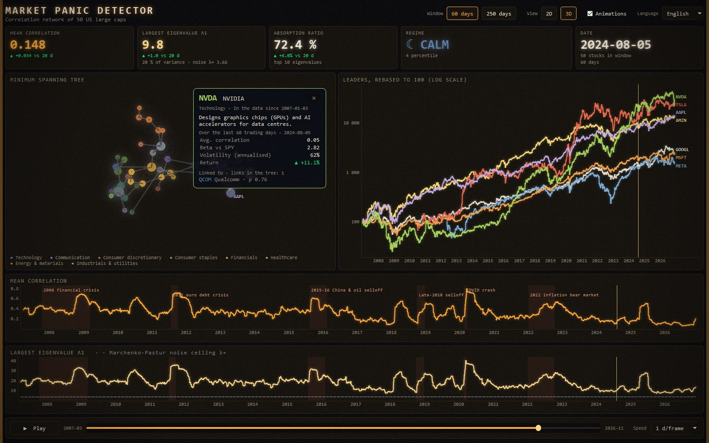

November 2026
Abstract
This paper documents a detector of market panic built on the correlation network of 50 US large caps from 2007 to 2026. Each trading day, on rolling windows of 60 and 250 days, it measures the mean pairwise correlation, the largest eigenvalue of the correlation matrix against its Marchenko-Pastur noise ceiling, the absorption ratio and a minimum spanning tree, and it labels the market calm, tense or panicked from a percentile computed on past data only. On 16 March 2020 a single eigenvalue explains 81% of all movement and the mean link of the tree falls from 0.90 to 0.40. An event study of 17 declines of SPY greater than 10% and predictive tests with non-overlapping samples and Newey-West standard errors find that the indicator reacts during crises but does not anticipate them: it was never in tension or panic at the peak of a fresh decline, and its changes do not predict the next 20 days of returns (r = –0.02, p = 0.77). The measures are shown in a native 3-D dashboard.
Diversification rests on stocks that do not move together. In a quiet market Apple reacts to Apple’s news and Exxon to the price of oil; in a crisis one force (fear, the need for cash, forced selling) dominates, and stocks fall together precisely when diversification is needed most. This paper measures that synchronisation day by day and asks a simple question: does a rise in synchronisation warn of a crash, or does it only describe one under way?
The measures come from two literatures. Random matrix theory separates the structure of a correlation matrix from its noise (Marchenko and Pastur 1967; Laloux et al. 1999); its largest eigenvalue is the strength of the market factor, and the share of variance held by the top eigenvalues is the absorption ratio of Kritzman et al. (2011). Network methods turn the same matrix into a minimum spanning tree (Mantegna 1999), whose links shorten when correlations rise (Onnela et al. 2003).
The answer is negative and is reported as such. The indicator is a precise thermometer: it shows how synchronised the market is today and confirms a broad sell-off within days. It is not a barometer: at the peak of every fresh decline it read calm or had no history yet, and its changes carry no information about the next month’s returns.
The sample holds daily closes adjusted for splits and dividends of 50 US large caps and of the SPY exchange-traded fund, downloaded from Yahoo Finance for 3 January 2007 to 23 November 2026 (5,005 trading days). The stocks are grouped into eight sectors (Table 1); seven leaders (NVDA, AAPL, MSFT, GOOGL, AMZN, META, TSLA) are always included. Four stocks list after the start: V, AVGO, TSLA and META. All measures use daily log returns, never prices. A stock enters a window once it has at least 95% of the window’s days, so late listings join the network as soon as they have enough history.
The universe: 50 US large caps in eight sector groups.
| Sector group | Stocks | Tickers |
|---|---|---|
| Technology | 10 | NVDA, AAPL, MSFT, AVGO, ORCL, CSCO, ADBE, CRM, INTC, QCOM |
| Communication services | 5 | GOOGL, META, NFLX, DIS, VZ |
| Consumer discretionary | 5 | AMZN, TSLA, HD, MCD, NKE |
| Consumer staples | 5 | WMT, PG, KO, PEP, COST |
| Financials | 7 | JPM, BAC, WFC, GS, BRK-B, V, MA |
| Healthcare | 6 | UNH, JNJ, LLY, PFE, MRK, ABT |
| Energy and materials | 5 | XOM, CVX, COP, SLB, FCX |
| Industrials and utilities | 7 | CAT, HON, GE, UNP, BA, NEE, DUK |
The universe is chosen with today’s knowledge: an investor in 2007 would have picked a different list, including firms that later shrank or disappeared. The levels of correlation are therefore those of today’s winners, a survivorship bias discussed in Section 6.
Let C be the N × N correlation matrix of the stocks present in a window of T days, with eigenvalues λ1 ≥ λ2 ≥ … ≥ λN summing to N. Every measure is computed each day for T = 60 and T = 250.
Mean correlation. The average of the N(N – 1)/2 = 1,225 off-diagonal correlations. Over the sample it averages 0.33 on the 60-day window, from 0.06 on 9 July 2026 to 0.80 on 16 March 2020.
Largest eigenvalue. λ1 measures the strength of the single largest common factor, and λ1/N is the share of total variance it explains. It ranges from about 1, when stocks are unrelated, to N, when they move as one. Figure 1 shows both series; they move together, and both jump in every crisis.

If the N return series were independent noise observed over T days, the eigenvalues of their correlation matrix would follow the Marchenko-Pastur law and stay below
which equals 3.66 for 50 stocks and 60 days, and 2.09 for 250 days. Figure 2 compares the spectrum of a calm day with that of the COVID crash. On 1 August 2017 a handful of eigenvalues clear the ceiling: the market factor (λ1 = 10.5) and a few sector factors. On 16 March 2020 a single eigenvalue of 40.4 out of 50 takes over, and every other one falls back into the noise band.

Absorption ratio. The share of variance held by the top N/5 = 10 eigenvalues (Kritzman et al. 2011): 71% on 1 August 2017 and 95% on 16 March 2020. A high ratio describes a fragile market, where a shock spreads to every stock.
Mechanism. Each correlation becomes a distance,
which is 0 for stocks that move as twins, √2 for unrelated ones and 2 for opposites. Kruskal’s algorithm keeps the N – 1 = 49 shortest links that connect every stock without a loop (Mantegna 1999).
Layout. Node positions are fitted to the tree’s path distances by stress majorization, in two and three dimensions. Each day starts from the previous day’s positions, with a pull towards them and a rotation back onto them, so the drawing moves smoothly and keeps one absolute scale: on the 60-day window the median daily move is 1.6% of the tree’s size.
Reading. In August 2017 the tree is long and the sector branches stand apart, with a mean link of 0.90. On 16 March 2020 it collapses into one tight block with a mean link of 0.40 (Figure 3). About 46% of all links join two stocks of the same sector.

Rule. Each day the 60-day mean correlation is ranked among all values observed up to that day, never later ones. Below the 60th percentile the market is CALM, from the 60th to the 90th TENSION, above the 90th PANIC. The first 250 observations are a warm-up with no regime. On the 60-day window the market spends 68% of days in CALM, 22% in TENSION and 5% in PANIC (Figure 4).
Robustness. A test rewrites the whole future of a series and checks that no past regime changes; a second test checks that classifying a truncated history gives the same answer as the full run.
Weakness. Because the percentile is expanding, each crisis is judged against every earlier one. The milder late crises (2018, 2022, 2025) are compared with 2008 and 2020 and never reach PANIC.

Design. Declines of SPY are found with a zig-zag rule: a peak is confirmed by a fall of 10%, the trough by a rebound of 10%, so 2010 and 2011 count as separate events although SPY had not regained its 2007 high. This gives 17 declines (Table 2). Some are aftershocks, a new leg down soon after a rebound, which start from a correlation already raised by the previous fall. The 9 “fresh” events are those whose 60-day pre-peak window starts after the previous event ended. The indicator is followed from 60 trading days before each peak to 20 days after.
Result. Nothing stands out before the peak (Figure 5). On the fresh events the mean correlation averages 0.24 sixty days before the peak and 0.25 at the peak, and its 60-day change ranks at the 62nd percentile of all 60-day changes. No fresh event was in TENSION or PANIC at its peak. After the peak the correlation jumps, to 0.36 twenty days later, but PANIC arrived for only 4 of the 9 fresh events, always after SPY had already fallen 10%: 2 to 32 trading days later (median 6).
Aftershocks. Over all 17 events, 13 of 17 show a pre-peak rise larger than the median (sign test p = 0.049). The excess comes from new legs down inside 2008, late 2015 and 2022; on fresh events it disappears (6 of 9, p = 0.51).

SPY declines of more than 10% and the 60-day indicator.
| Peak | –10% crossed | Trough | Depth | Fresh | Corr. at peak | Regime at peak | PANIC after –10% |
|---|---|---|---|---|---|---|---|
| 2007-10-09 | 2008-01-08 | 2008-03-10 | –17.8% | yes | 0.45 | warm-up | – |
| 2008-05-19 | 2008-06-27 | 2008-10-10 | –37.5% | aftershock | 0.36 | CALM | +64 |
| 2008-10-13 | 2008-10-15 | 2008-10-27 | –17.2% | aftershock | 0.60 | PANIC | –2 |
| 2008-11-04 | 2008-11-11 | 2008-11-20 | –24.9% | aftershock | 0.65 | PANIC | –5 |
| 2009-01-06 | 2009-01-20 | 2009-03-09 | –27.1% | aftershock | 0.67 | PANIC | –9 |
| 2010-04-23 | 2010-05-20 | 2010-07-02 | –15.7% | yes | 0.31 | CALM | +32 |
| 2011-04-29 | 2011-08-04 | 2011-10-03 | –18.6% | yes | 0.30 | CALM | +2 |
| 2015-07-20 | 2015-08-24 | 2015-08-25 | –11.9% | yes | 0.36 | CALM | +7 |
| 2015-11-03 | 2016-01-15 | 2016-02-11 | –12.8% | aftershock | 0.60 | TENSION | – |
| 2018-01-26 | 2018-02-08 | 2018-02-08 | –10.1% | yes | 0.12 | CALM | – |
| 2018-09-20 | 2018-12-14 | 2018-12-24 | –19.3% | aftershock | 0.13 | CALM | – |
| 2020-02-19 | 2020-02-27 | 2020-03-23 | –33.7% | yes | 0.25 | CALM | +4 |
| 2022-01-03 | 2022-02-22 | 2022-03-08 | –12.9% | yes | 0.24 | CALM | – |
| 2022-03-29 | 2022-04-29 | 2022-06-16 | –20.6% | aftershock | 0.27 | CALM | – |
| 2022-08-16 | 2022-09-20 | 2022-10-12 | –16.7% | aftershock | 0.42 | TENSION | – |
| 2025-02-19 | 2025-03-13 | 2025-04-08 | –18.8% | yes | 0.16 | CALM | – |
| 2026-10-06 | 2026-11-20 | 2026-11-20 | –11.5% | yes | 0.08 | CALM | – |
“PANIC after –10%”: trading days between the day the decline crossed –10% and the first PANIC day; negative when PANIC was already present; a dash when PANIC never came before 20 days after the trough.
Test. SPY’s log return over the next 20 trading days is set against three signals known on the day: the 20-day change in mean correlation, its level, and the 20-day change in the absorption ratio. Each is tested two ways: Pearson and Spearman correlations on non-overlapping 20-day samples, and an ordinary least-squares regression on all days with Newey-West standard errors (Newey and West 1987) and 20 lags. A same-period test, against SPY’s return over the previous 20 days, measures reaction rather than anticipation.
Result. No forward test is significant on the 60-day window (Table 3, Figure 6). Over the same 20 days the link is strong: r = –0.49 on the 60-day window and –0.45 on the 250-day window. The only nominal exception is the level of the 250-day correlation, significant with Newey-West errors (p = 0.015) but not on non-overlapping samples (p = 0.064). Its sign is positive: higher correlation was followed by slightly higher returns, as Pollet and Wilson (2010) find for average correlation, which is the opposite of a crash warning. With six forward tests, 0.3 false positives are expected at the 5% level by chance alone.

Predictive and same-period tests.
| Window | Test | Signal | Pearson r | p | NW slope (%/sd) | NW t | NW p |
|---|---|---|---|---|---|---|---|
| 60 days | forward | Δ mean corr. | –0.019 | 0.766 | –0.16 | –0.53 | 0.597 |
| 60 days | forward | Corr. level | +0.080 | 0.212 | +0.30 | +1.22 | 0.221 |
| 60 days | forward | Δ absorption | –0.009 | 0.883 | –0.12 | –0.42 | 0.674 |
| 60 days | same period | Δ mean corr. | –0.487 | < 0.001 | –2.06 | –5.45 | < 0.001 |
| 250 days | forward | Δ mean corr. | –0.044 | 0.500 | +0.01 | +0.04 | 0.969 |
| 250 days | forward | Corr. level | +0.121 | 0.064 | +0.56 | +2.44 | 0.015 |
| 250 days | forward | Δ absorption | –0.022 | 0.737 | –0.02 | –0.04 | 0.967 |
| 250 days | same period | Δ mean corr. | –0.454 | < 0.001 | –2.35 | –6.56 | < 0.001 |
Pearson r and p on non-overlapping 20-day samples; NW: OLS on all days with Newey-West standard errors (20 lags), slope in percentage points of 20-day return per standard deviation of the signal.
The measures are precomputed and shown in a native desktop application written in Python with PySide6 and pyqtgraph (Figure 7). The top row gives the four indicators and the regime; the tree is drawn in three dimensions and can be turned and zoomed; the seven leaders’ prices and both series over time sit beside and below it; a timeline replays 2007 to 2026. Clicking a node opens a card with the company’s activity, its links in the tree with their correlation, and its average correlation, beta to SPY, volatility and return over the window. The interface switches live between English, French and Chinese.

Survivorship bias. The 50 stocks are today’s large caps, chosen with hindsight; the measured correlations are those of firms that survived and grew.
Few events. Seventeen declines, nine of them fresh and several belonging to the same crisis, give little statistical power, and rolling windows are strongly autocorrelated. Non-overlapping samples and Newey-West errors address this only in part.
Hindsight. Peaks are known only after the fact; only the day a decline crosses –10% is observable in real time.
Data. Adjusted closes come from a single free source and were not checked against a second one.
Mean correlation and the largest eigenvalue are a thermometer, not a barometer. They measure precisely how synchronised the market is: when every stock moves as one, diversification has stopped working, and the network contracts into a single block. They confirm a broad sell-off within days and tell it apart from narrower declines. In this sample they gave no advance warning, and the regime they define describes the structure of the market; it is not a signal to buy or sell.
Kritzman, M., Li, Y., Page, S. and Rigobon, R. (2011). Principal components as a measure of systemic risk. Journal of Portfolio Management 37(4), 112–126.
Laloux, L., Cizeau, P., Bouchaud, J.-P. and Potters, M. (1999). Noise dressing of financial correlation matrices. Physical Review Letters 83(7), 1467–1470.
Mantegna, R. N. (1999). Hierarchical structure in financial markets. European Physical Journal B 11, 193–197.
Marchenko, V. A. and Pastur, L. A. (1967). Distribution of eigenvalues for some sets of random matrices. Mathematics of the USSR-Sbornik 1(4), 457–483.
Newey, W. K. and West, K. D. (1987). A simple, positive semi-definite, heteroskedasticity and autocorrelation consistent covariance matrix. Econometrica 55(3), 703–708.
Onnela, J.-P., Chakraborti, A., Kaski, K., Kertész, J. and Kanto, A. (2003). Dynamics of market correlations: taxonomy and portfolio analysis. Physical Review E 68, 056110.
Pollet, J. M. and Wilson, M. (2010). Average correlation and stock market returns. Journal of Financial Economics 96(3), 364–380.